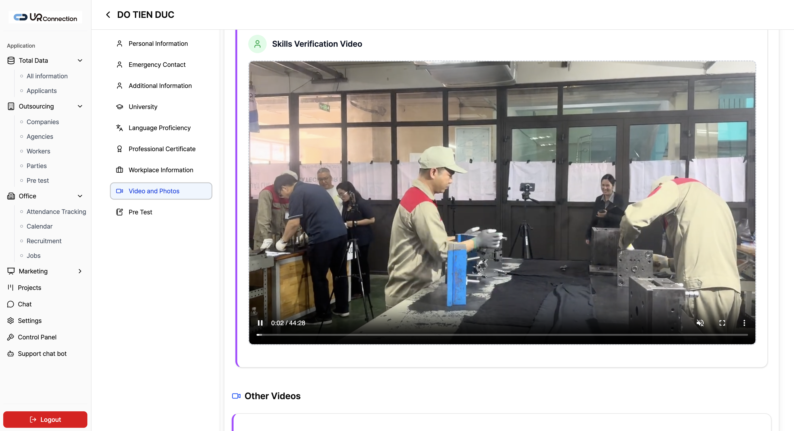
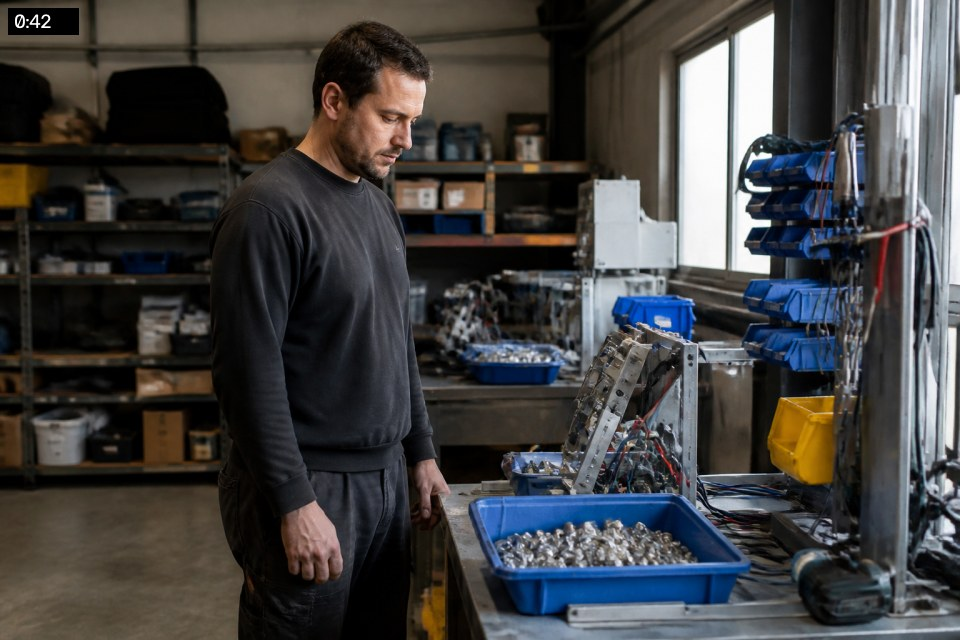
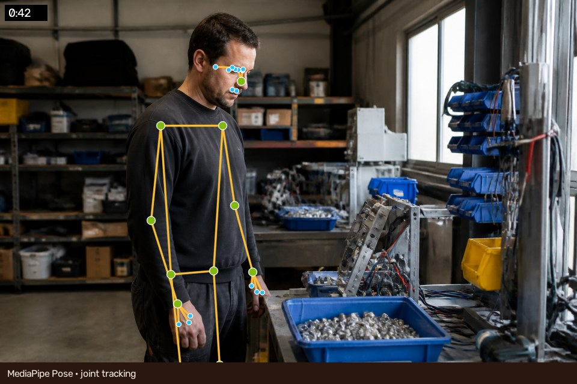

보이는 작업을
신뢰할 수 있는 역량으로
작업 영상과 결과물 사진을 AI가 분석해, 해외 인력의 숙련도를 설명 가능한 데이터로 만들고 채용·배치까지 연결합니다.

전문가의 눈은 정확하지만,
확장되기 어렵습니다
이미 답은
영상과 사진 안에 있습니다
자세, 손의 이동, 작업 리듬, 정지 구간, 반복 패턴과 완성품 품질은 숙련도를 보여주는 관찰 가능한 증거입니다.

업로드한 영상이
설명 가능한 점수가 되는 과정
점수만 말하지 않고
왜 그런지 보여줍니다
평가 근거는
영상의 정확한 순간으로 돌아갑니다

타임라인 마커를 누르면 해당 장면, 관절 좌표, Feature 값이 함께 열립니다.
손 이동거리 142.6 · 관절각 분산 0.18
Cycle 12회 · Tool Switch 5회
AI는 측정하고,
전문가는 판단을 확정합니다
DO TIEN DUC
Vietnam · 금형조립경력7년 4개월
숙련도중급 · 78점
언어한국어 TOPIK 3
자격금형기능 관련
여권/신원검증 완료
체류·고용절차 진행
능력치와 함께
고용 가능 상태를 관리합니다
경력·국적·자격·언어·소속·평가 이력뿐 아니라 해외 작업자의 비자 신청·발급·입국·배치 상태까지 하나의 프로필에서 추적합니다.
※ 실제 체류자격·외국인등록 관련 절차와 번호는 법무/행정 전문가 검토 후 시스템 항목을 확정해야 합니다.
기업이 받는 것은
영상이 아니라 채용 근거입니다
작업자 포트폴리오, 역량 점수, 영상 근거, 결과물 품질, 전문가 승인, 투입 조건을 한 번에 전달합니다.
금형조립 · 주작업 가능
조건부 매칭반복성과 정확도가 양호합니다. Idle 구간 보완 교육 후 자동차부품 A라인 또는 금형셀 B 배치를 추천합니다.
필요한 것은 하나의 모델이 아니라,
신뢰 가능한 운영 시스템입니다
핵심 비기능 요구
개인영상·신원정보 접근통제와 암호화
모델/가중치/평가자 변경 이력 추적
직종별 기준·동의서·보존기간 관리
실패 큐·재처리·모니터링 운영성
AI 결과에 대한 사람의 승인과 이의제기
설명 가능한 MVP로 시작해
데이터가 모델을 성장시킵니다
업무 흐름 검증
목 UI, 작업자·영상·분석·리포트, 평가 근거와 매칭 시나리오를 검증합니다.
실데이터 자동 분석
업로드 API, Pose, Feature, 규칙 기반 Score, 검토 승인과 보안·운영 기능을 연결합니다.
직종별 ML 고도화
전문가 점수와 채용·현장 성과 라벨을 축적해 회귀·랭킹 모델과 매칭 정확도를 개선합니다.
숙련도를 기다리는 시간은 줄이고,
사람을 믿을 근거는 늘립니다
AI 숙련도 검증에서 글로벌 인력의 채용·비자·배치까지 — 영상이 일자리로 연결되는 인프라.